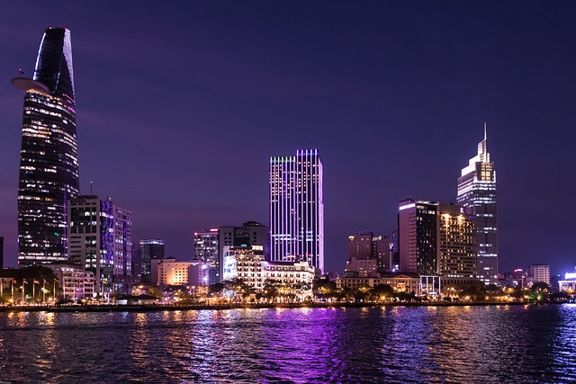
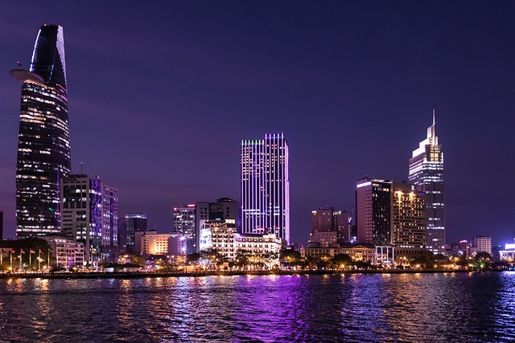

Vietnã, Camboja e Laos
"Uma jornada por maravilhas culturais, templos antigos e paisagens deslumbrantes."
 

Dia 01 – Hanoi (Vietnã)
Chegada em Hanoi, com recepção e traslado ao hotel. Descubra a fascinante história da capital vietnamita, que remonta ao século III e foi revitalizada no século XI pela dinastia que libertou o país do domínio chinês. Explore a rica herança colonial francesa em seus monumentos e paisagens arborizadas. Visite o Lago da Espada Restituída, o Templo da Literatura, a icônica Pagoda de Um Só Pilar e o Mausoléu de Ho Chi Minh. Faça uma imersão no Centro Histórico e conheça uma casa tradicional vietnamita. Após o almoço, se encante com um espetacular espetáculo de marionetes na água. Jantar e pernoite.
Dia 02 – Hanoi – Halong
Acorde cedo e aproveite um café da manhã no hotel antes de seguir para a Baía de Halong, passando pelos campos e portos tradicionais da região. Chegue à deslumbrante Baía de Halong, onde um cruzeiro de barco o levará a uma viagem mítica, onde o dragão emerge do mar. Almoço e jantar a bordo.
Dia 03 – Halong – Hanoi – Hue
Após o café da manhã, embarque em sampans locais e visite a Gruta da Surpresa, com a possibilidade de um refrescante banho em praias isoladas. Retorno ao porto e traslado ao aeroporto de Hanoi para voo a Hue. Chegada, assistência, traslado e acomodações no hotel. Jantar e pernoite.
Dia 04 – Hue
Explore Hue, antiga capital do Vietnã durante a dinastia Nguyen, e Patrimônio Mundial da Humanidade pela UNESCO. Conheça a Citadela e a Cidade Proibida, onde os imperadores residiam, e o grandioso Palácio Thai Hoa. Navegue pelo Rio dos Perfumes até os túmulos dos Imperadores Nguyen e a famosa Pagoda Thien Mu. Almoço e jantar em restaurante local. Pernoite.
Dia 05 – Hue – Ho Chi Minh
Após o café da manhã, voo para Ho Chi Minh (antiga Saigon), a maior cidade do Vietnã. Mergulhe na rica história colonial francesa, explorando avenidas e mercados vibrantes. Visite Cholon, a 'cidade chinesa', e as famosas pagodas de Giac Lam e Thien Hau. Passeie pela “cidade branca” e seus edifícios coloniais. Almoço e jantar no hotel. Pernoite.
Dia 06 – Ho Chi Minh – Siem Reap (Camboja)
Traslado para o aeroporto e voo para Siem Reap. À tarde, conheça a antiga cidade fortificada de Angkor Thom e seus magníficos templos, incluindo o Bayon, Baphuon e o Pimeanakas. Termine a visita com os Terraços dos Elefantes e do Rei Leproso. Almoço e jantar. Pernoite.
Dia 07 – Siem Reap
Visite o templo de Bantey Srey, com suas impressionantes esculturas, e siga para o grande complexo de Angkor. Explore o templo de Prae Khan, o Neak Pean e o Ta Phrom. Almoço e jantar em restaurante local. Pernoite.
Dia 08 – Siem Reap – Luang Prabang (Laos)
Visite o famoso templo de Angkor Wat, uma das maravilhas do mundo. Após o almoço, pegue o voo para Luang Prabang. Chegada, traslado ao hotel e descanso. Aproveite a noite para explorar o mercado noturno. Pernoite.
Dia 09 – Luang Prabang – Grutas de Pak Ou
Explore Luang Prabang, patrimônio mundial da UNESCO, e visite o Museu Nacional e os mosteiros Wat Sene e Wat Xieng Thong. Navegue pelo Rio Mekong até as Grutas de Pak Ou, um local sagrado repleto de milhares de estátuas de Buda. Almoço e jantar. Pernoite.
Dia 10 – Luang Prabang – Experiência no Vilarejo Hmong – Cachoeiras de Kuang Si
Participe do ritual matinal dos monges e explore o mercado local. Conheça o povo Hmong e sua agricultura em um trekking pelas plantações de arroz. Visite as belas Cachoeiras de Kuang Si, com sua água cristalina e paisagens deslumbrantes. Termine o dia com uma visita ao topo da colina Phou Si para admirar o pôr do sol. Almoço pic-nic próximo às cachoeiras e jantar no hotel. Pernoite.
Dia 11 – Luang Prabang
Dia livre para atividades pessoais e últimas compras. Traslado ao aeroporto para o voo de retorno.